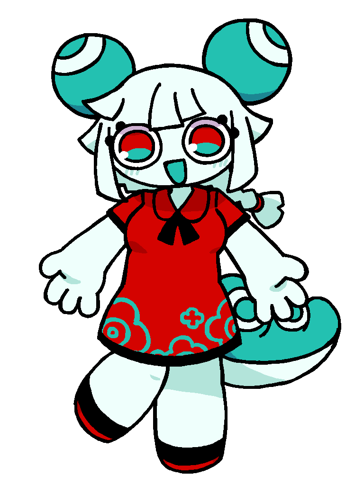

チーム : デプリ [リーダー]
皆を優しく照らす太陽のような、慈愛に満ちた女神。…と言われているが、彼女の本性を知っている社員達はそれに納得していない。若い女性の見た目をしているが、実年齢は不明。ニジのことを心の底から愛しており、彼のためならなんだってできる。
【性別】両性 (女性寄り) 【一人称】私 【身長】159cm 【好きなもの】白色 / 生き物全般 【苦手なもの】電子機器
←Back